⠀⠀⠀O Acampamento Meio-Sangue é um campo de treinamento secreto de semideuses gregos localizado em Long Island. Seu diretor é Dionísio (que é chamado de "Sr. D que dito por Percy Jackson é chato demais") e Quíron, o lendário centauro treinador de heróis da mitologia grega (diretor de atividades).Havia originalmente doze chalés, uma para cada deus do Olimpo, mas após a Segunda Guerra Titã, Percy fez uma promessa aos deuses para reivindicar todos os seus filhos e para os deuses menores, então agora há vinte cabines no total, uma homenagem a cada deus ou deusa. Algumas das cabines incluem Zeus, Hera, Poseidon, Deméter, Nêmesis, Hebe, Perséfone e Hécate sendo as mais recentes adições. Isso faz com que sejam trinta e um chalés.
⠀⠀⠀O acampamento tem fronteiras mágicas impostas pelo Velocino de Ouro que foi tomado da ilha de Polifemo e colocado no pinheiro de Thalia, garantindo que nenhum monstro possa ter acesso ao local. Antes de descobrirem o Acampamento Romano, descreviam o grego como o único local seguro para semideuses. O acampamento tem a tradição de que o membro da cabine mais qualificado ou que está lá a mais tempo se torne um conselheiro. Os únicos que podem desafiar os conselheiros para assumir seu lugar são os mais velhos, ou que tenham concluído mais missões que o conselheiro atual.
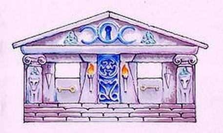
O Chalé de Hera é feito de mármore, e tem o formato de uma caixa. O Chalé é mais elegante do que o Chalé de Zeus, com colunas brancas mais magras, guirlandas com romãs e flores.
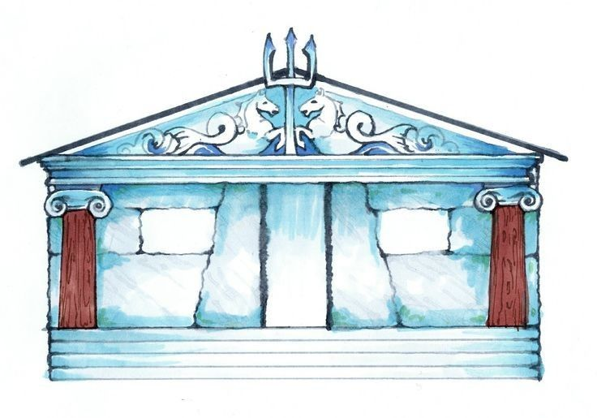
Ele é descrito como comprido, baixo e sólido com paredes externas de pedras cinzentas rústicas salpicadas de pedaços de conchas e coral. Mais tarde na série, Poseidon acrescenta uma fonte para seus filhos, Tyson e Percy Jackson. A fonte é feita de pedra do mar cinzenta, tem um peixe que jorra a água de sua boca, e tem uma decoração coral.
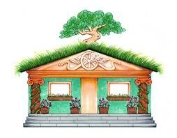
O teto do chalé é construído com grama e tem videiras de tomate crescendo nas paredes. Tem flores silvestres e rosas crescendo na varanda. A cor do chalé é de um tom claro de marrom.O teto do chalé é construído com grama e tem videiras de tomate crescendo nas paredes. Tem flores silvestres e rosas crescendo na varanda. A cor do chalé é de um tom claro de marrom
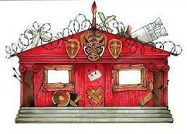
Cabine de Ares é pintado com uma cor vermelho sangue, tem arame farpado no telhado, e uma cabeça de javali recheado na porta. Os olhos do javali parecem olhar para quem está passando. Aparentemente, também existem minas terrestres que o rodeiam. Ele também é descrito como tendo a música punk rock tocando com ele às vezes.
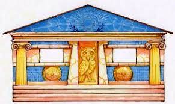
Percy o descreve como um prédio prateado, nada elegante, com cortinas brancas simples e uma coruja entalhada na pedra acima da porta, cujo olhos de ônix parecem perseguir quem se aproxima. Seu interior é uma "oficina para crianças geniais". Os beliches são agrupados em uma parede e a maior parte do quarto é ocupada por bancadas de trabalho, mesas, estojos de ferramentas e armas. Nos fundos, tem uma imensa biblioteca entulhada com antigos pergaminhos, livros encadernados em couro e brochuras.
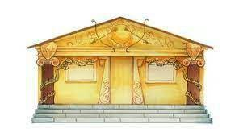
À primeira vista o chalé se parecesse com uma construção de campo normal, porém, quando o Sol incide sobre ele, brilha tanto em um matiz dourado que é quase impossível não desviar o olhar ao passar. Nas paredes podem ser vistos entalhamentos de notas musicais (sobretudo a Clave de Sol) e pequenos sóis em relevo; Em geral crianças e adolescentes de porte atlético, cabelos loiro-dourados e olhos claros, os ocupantes do Chalé 7 lideram a lista de cabine com maior número de conselheiros mortos, seguidos pelo de Hefesto, Hades e Afrodite.
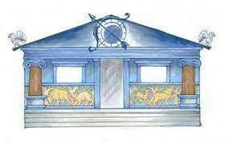
O Chalé de Ártemis é um edifício de prata que brilha à noite, como se refletindo os raios da lua. Durante o dia, ele se parece com uma cabine regular. É decorado com as pinturas e esculturas de animais silvestres, principalmente o veado (animal simbólico Ártemis).Desde que ela jurou permanecer virgem, Ártemis não tem filhos. No entanto, as Caçadoras ficam em seu chalé quando visitam o Acampamento Meio-Sangue.
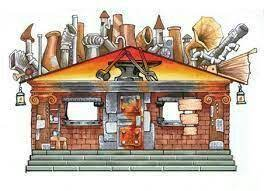
A entrada é como uma porta de cofre, circular, e de metal grosso. Ele abre com um monte de engrenagens girando e assobiando fumaça. Tem paredes de metal brilhante e portas de metal. Ele é conhecido por ser imundo e bagunçado, cheio de lixo, muitas vezes.
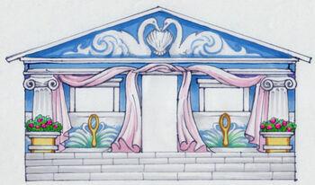
O Chalé de Afrodite tem um telhado pintado, com pilares e um deck de xadrez azul-e-branco com degraus e paredes cinzentas. Ele está cheio de meninas bonitas com roupas de grife e muito boa aparência, belos rapazes. O interior do chalé cheira muito a perfume. As paredes internas do chalé são rosa com guarnição branca da janela. As cortinas e as camas são em tons pastel de azul e verde.
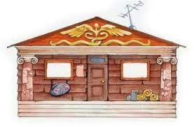
É o mais antigo e o mais usado para o futuro dos chalés, o que é devido ao seu uso anterior como um lar para todos os semideuses não reclamados, bem como os filhos dos deuses menores. É o mais lotado, pois além dos filhos de Hermes, lá também dormem meio-sangues indeterminados.
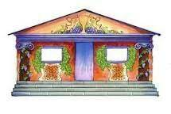
O chalé é de um vermelho-vivo mal pintado, tem seu telhado forrado de arame farpado, com uma cabeça de javali empalhada acima da porta central. Espadas e facões foram entalhados no mármore escuro e decoram as paredes do lugar. Quase sempre pode se ouvir rock de dentro do chalé. forte cheiro de produção vinícola predomina no interior do chalé, que é mobiliado por uma porção de beliches com colchas roxas e com um enorme freezer em seu fundo, repleto de latinhas de Coca-Cola diet, a bebida preferida de Dionísio.
Percy Jackson é o personagem principal da série Percy Jackson e os Olimpianos. Percy é um semideus grego filho de Poseidon e Sally Jackson e é atualmente o único habitante do Chalé de Poseidon. É meio-irmão de Tyson. Namorado de Annabeth Chase. Percy nasceu em 18 de Agosto de 1993.
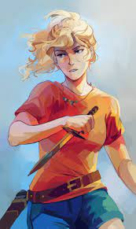
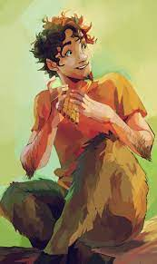
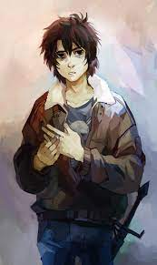
Nico di Angelo é um semideus grego de quinze anos, filho de Hades e Maria di Angelo. Ele também é o irmão mais novo da falecida Bianca di Angelo e o meio-irmão de Hazel Levesque. Ele é conhecido no Mundo Inferior como o "Rei Fantasma" depois de tirar o título do Rei Minos. Ele está atualmente em um relacionamento com Will Solace.